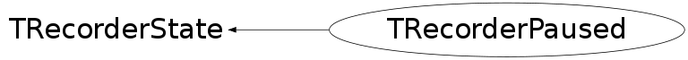

class TRecorderPaused: public TRecorderState
Represents state of TRecorder when paused
Function Members (Methods)
public:
| TRecorderPaused(const TRecorderPaused&) | |
| static TClass* | Class() |
| virtual TRecorder::ERecorderState | GetState() const |
| virtual TClass* | IsA() const |
| virtual void | TRecorderState::ListCmd(const char*) |
| virtual void | TRecorderState::ListGui(const char*) |
| TRecorderPaused& | operator=(const TRecorderPaused&) |
| virtual void | TRecorderState::Pause(TRecorder*) |
| virtual void | TRecorderState::PrevCanvases(const char*, Option_t*) |
| virtual Bool_t | TRecorderState::Replay(TRecorder*, const char*, Bool_t, TRecorder::EReplayModes) |
| virtual void | ReplayStop(TRecorder* r) |
| virtual void | Resume(TRecorder* r) |
| virtual void | ShowMembers(TMemberInspector& insp) |
| virtual void | TRecorderState::Start(TRecorder*, const char*, Option_t*, Window_t*, Int_t) |
| virtual void | TRecorderState::Stop(TRecorder*, Bool_t) |
| virtual void | Streamer(TBuffer& b) |
| void | StreamerNVirtual(TBuffer& b) |
protected:
| TRecorderPaused(TRecorderReplaying* state) | |
| void | TRecorderState::ChangeState(TRecorder* r, TRecorderState* s, Bool_t deletePreviousState) |
Data Members
private:
| TRecorderReplaying* | fReplayingState | Replaying that is paused |
Class Charts
{kind=link}
{kind=link}
{kind=link}
{kind=link}

Function documentation
TRecorderPaused(TRecorderReplaying* state)